木は以下を満たす、グラフの特殊なインスタンスです。
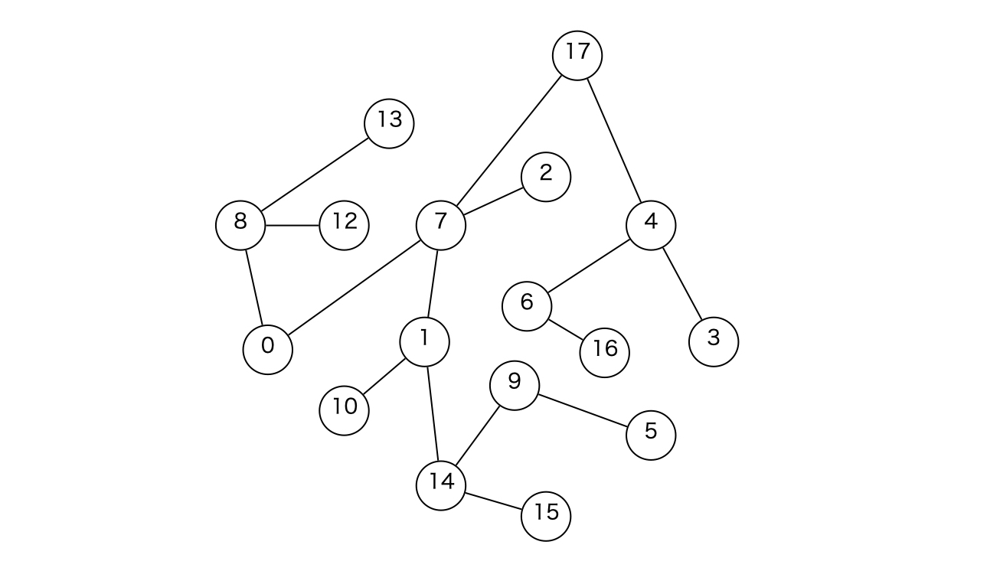
ある頂点を根とすることで、木構造及び木構造上での処理の見通しを良くします。頂点 \(0\) を根とすると、先ほど提示した木は以下のような構造になります。
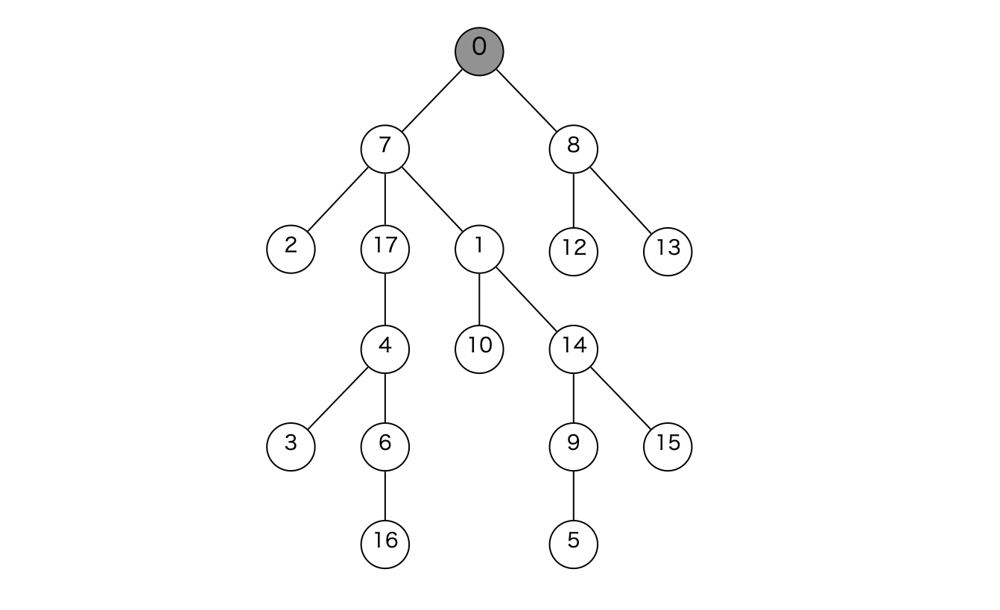
「どこが根やねん!!!」というツッコミはおいておいて、根付き木の説明します。
異なる \(2\) つの頂点 \(u,v\) の LCA とは、\(u,v\) の共通の祖先のうち根から最も遠いもの (\(u,v\) から最も近いもの) です。
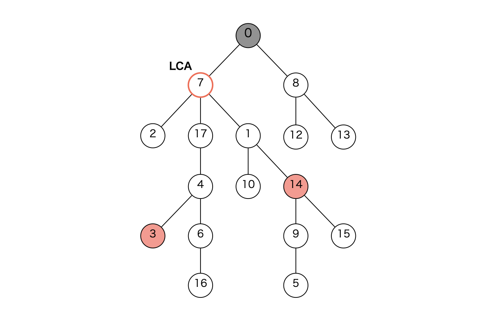
求め方木の辺を根方向に向き付けすると、木は Functional Graph になります。根からは根にリンクさせておいてください。
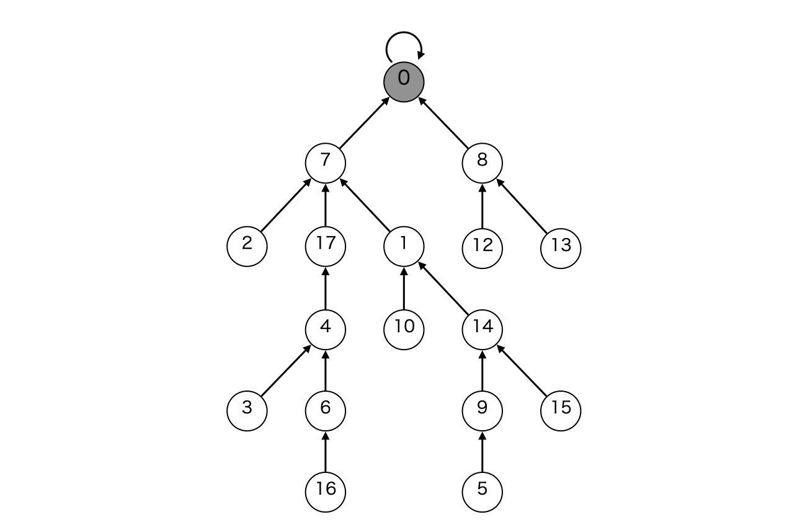
Functional Graph では状態の遷移をダブリングで管理することができます。具体的には、以下のテーブルを構築します。
頂点 \(u,v\) の LCA の計算の際、\(u\) の深さは \(v\) の深さ以上とします。そうでない場合は \(u,v\) をスワップすれば良いです。この時、頂点 \(u\) が頂点 \(v\) と同じ深さになるまで \(u\) を親方向に移動させます。ここで \(u\) の祖先は、\(v\) と深さの大小関係が 以下/より大きい の \(2\) つの領域に分断されるので、それらの領域の境界を見つけるために二分探索を行います。
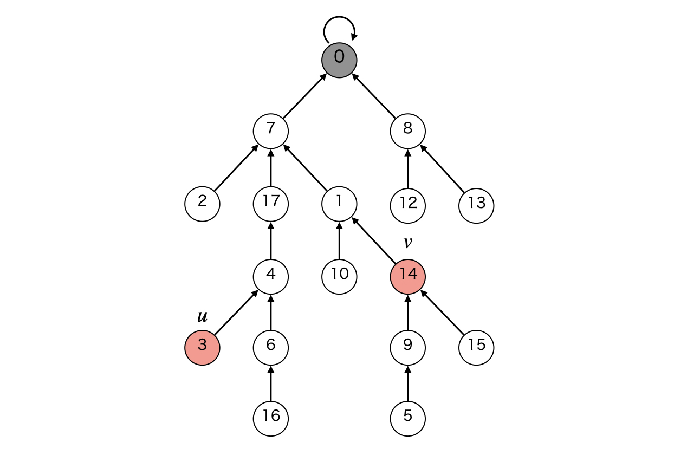
ここで行う二分探索は少し特殊で、自分はダブリング二分探索と呼んでいます。ダブリングテーブルで、各頂点の \(2\) の冪乗個上の祖先が何かはわかっています。よって、\(2\) の冪乗 \(2^k\) が大きい方から「\(u\) の \(2^k\) 個上の祖先が \(v\) の深さ以下であればその頂点に移動する」を繰り返すことで、頂点 \(u,v\) の深さが同じになるように \(u\) を移動させることができます。これは \(10\) 進数表示の整数を \(2\) 進数表示に変換する際の手法と同じです。
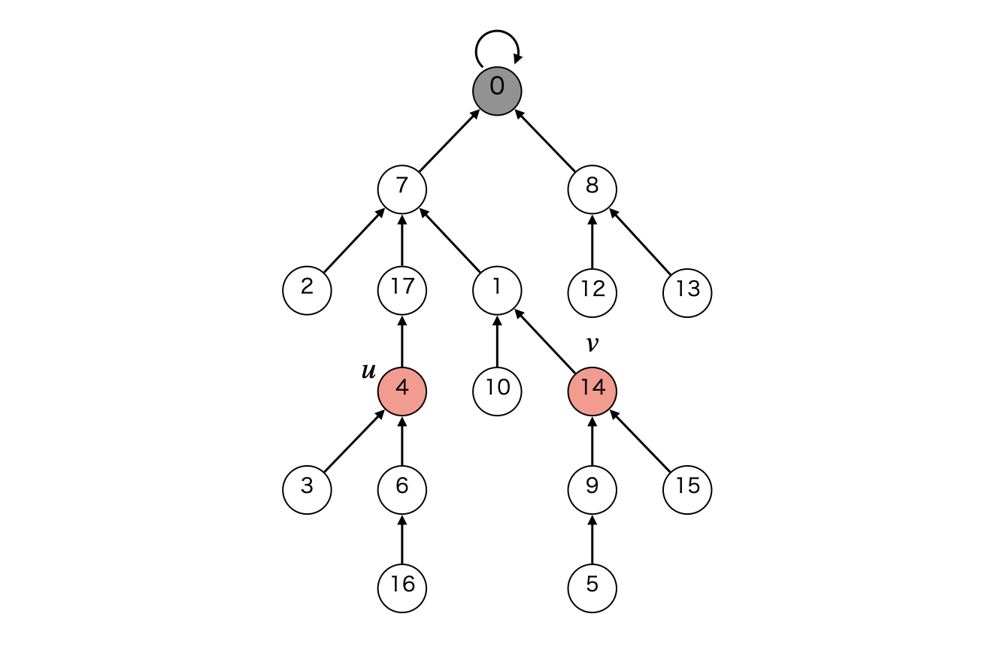
この時点で \(u=v\) ならば、LCA は \(u\) です。
共通祖先を調べる\(u,v\) の深さは同じなので、共通祖先から \(u,v\) までの距離はどちらも等しいです。\(\mathrm{same}(x) := \)「\(u\) の \(x\) 個上の祖先が \(v\) の \(x\) 個上の祖先と等しいか」という判定は、Yes/No の \(2\) つの領域に分割されるので、これもダブリング二分探索で解くことができます。
\(2\) の冪乗 \(2^k\) が大きい方から、\(\mathrm{same}\) の判定が No なら \(u,v\) をそれぞれ \(2^k\) 個上に移動することを繰り返すことで、\(u,v\) が境界まで移動し、\(u,v\) は共通祖先の一つ下の頂点になります。よって、この状態の \(u\) の親頂点が LCA です。
頂点数が \(N\) の木の頂点集合の部分集合 \(S\) に対して、\(S\) に含まれる頂点をカバーする部分グラフのうち、頂点数が最小の木を考えます。
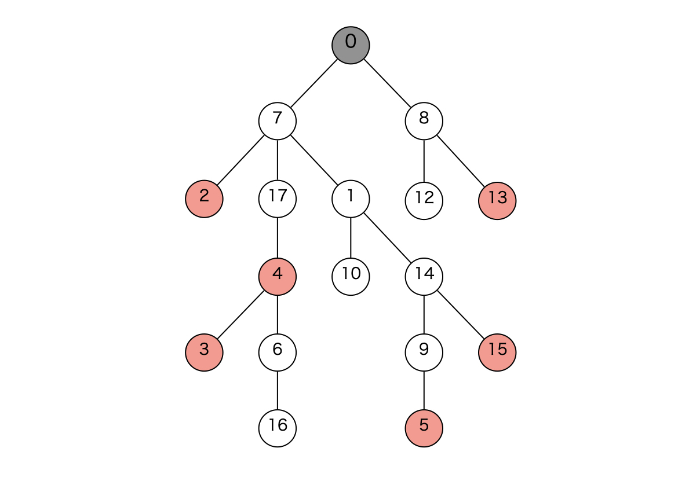
\(S = \{2,3,13,4,5,15\}\) の場合、以下の部分グラフです。
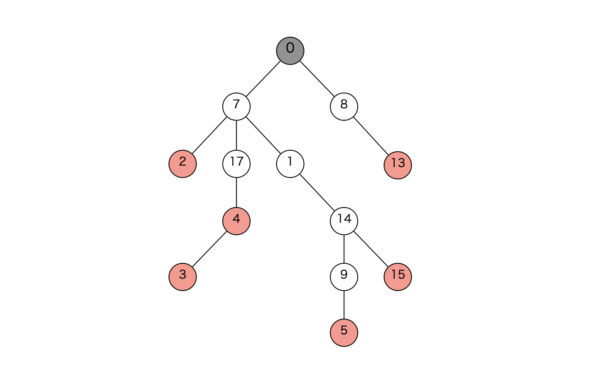
この部分グラフの頂点数は \(O(N)\) 個です。ここで、余計な一本道を圧縮することで頂点数が \(O(|S|)\) 個の木を新たに構築します。
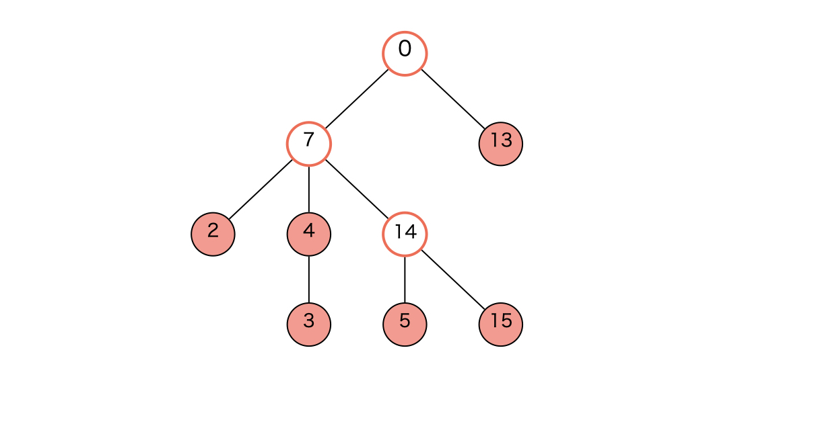
このようにして構築される木を、元の木に対して Auxiliary Tree と言います。Auxiliary Tree は \(S\) に含まれる頂点に加えて、\(S\) の頂点間の位置関係を補助する頂点も含みます。
アルゴリズム\(S\) の頂点を、元の木の根からの DFS で初めて到達するタイミングが早い順に並べ替えます。\(S = \{2,3,13,4,5,15\}\) の場合、\(S = \{2,4,3,5,15,13\}\) が一例です (DFS の道順はいくつもあるので、そのうちなら何でも良い)。
また実装の共通化のため、\(S\) の末尾には番兵として \(S_0\) を追加しておきます。以降、\(S = \{2,4,3,5,15,13,2\}\) とします。
DFS の到達順に頂点を調べながら Auxiliary Tree を構築します。最後に調べた頂点を \(r\) とし、次の処理で注目する頂点の集合を以下で定義します。
Auxiliary Tree の構築で行うべきことは、以下の \(3\) 点です。
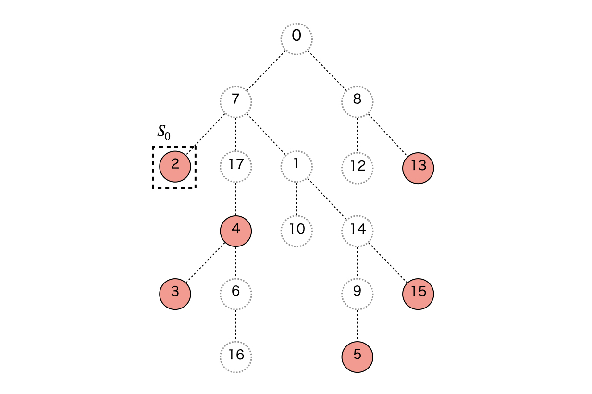
まず頂点 \(S_i=4\) を調べます。ここで、\(\mathrm{frontline}\) の最も下の頂点 (\(r\)) と \(S_i\) の LCA は Auxiliary Tree に含まれる頂点として確定します。そして \(\mathrm{frontline}\) が変更され、頂点 \(2\) が \(\mathrm{frontline}\) から除外されます。
このとき、深さが \(\mathrm{LCA}(r,S_i)\) よりも深い頂点をすべて \(\mathrm{frontline}\) から除外します。\(\mathrm{frontline}\) から除外されることで、今後の構築で注目されることはなくなり、Auxiliary Tree での位置や隣接する頂点が確定しました。
深い順に \(\mathrm{frontline}\) から除外し、除外順で隣接する頂点同士に辺を構築します。また最後に除外された頂点が \(\mathrm{LCA}(r,S_i)\) でないなら、その頂点と \(\mathrm{LCA}(r,S_i)\) の間にも辺を構築します。今回は \(2\) のみが除外され、\(2\) は \( \mathrm{LCA}(S_i,r) = 7\) ではないので、\(2\) と \(7\) の間に辺を構築します。
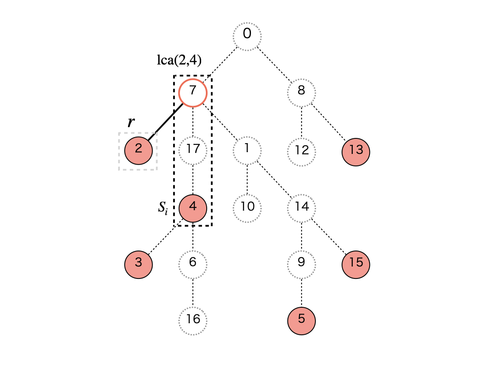
新たに頂点 \(\mathrm{LCA}(r,S_i)\) が確定したので \(\mathrm{frontline}\) に \(7\) を追加し、その後今調べた頂点 \(S_i = 4\) も \(\mathrm{frontline}\) に追加します。
補足 : このアルゴリズムのもとでは、\(\mathrm{frontline}\) に格納される頂点の深さが単調になるので、\(\mathrm{frontline}\) は末尾に追加/削除ができれば良く、stack で実現できます。
次は \(S_i = 3\) を調べます。\(\mathrm{LCA}(S_i,r) = \mathrm{LCA}(3,4) = 4\) です。このとき \(\mathrm{frontline}\) からは \(4\) が除外された後、手続きに従い \( \mathrm{LCA}(S_i,r) = 4\) と \(S_i = 3\) が追加されます。除外された頂点が \( \mathrm{LCA}(S_i,r)\) と等しいので、辺の構築は行いません。
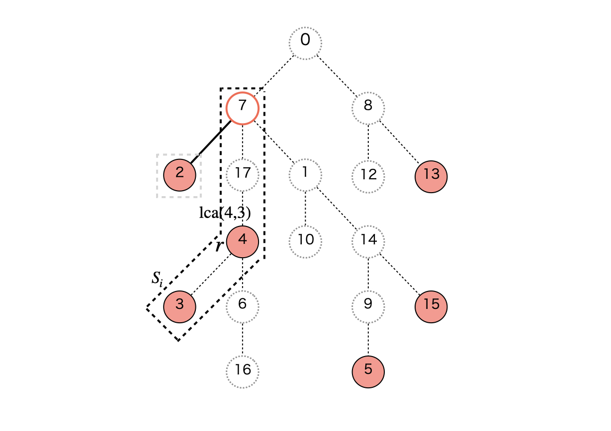
次に \(S_i = 5\) を調べます。\( \mathrm{LCA}(S_i,r) = 7\) 以下の頂点が \(\mathrm{frontline}\) に存在するので、それら (\(\{3,4,7\}\)) を除外しながら辺を構築します。最後に除外された頂点が \( \mathrm{LCA}(S_i,r) = 7\) なので、\(7,7\) に辺を構築することはできません。
その後、今調べた \(7,5\) を順に \(\mathrm{frontline}\) に追加します。
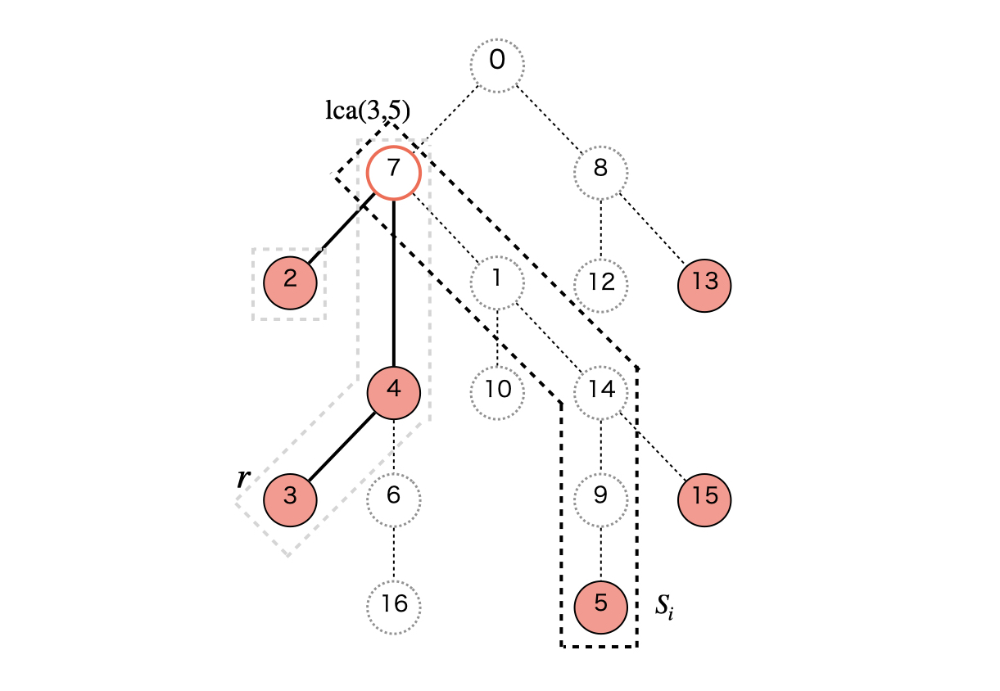
以降、同じ具合に構築を進めます。
\(S_i = 15\) を調べると、\(5\) のみが \(\mathrm{frontline}\) から除外され、\(5\) は \(\mathrm{LCA}(S_i,r) = 14\) ではないので、\(5\) と \(14\) の間に辺を構築します。
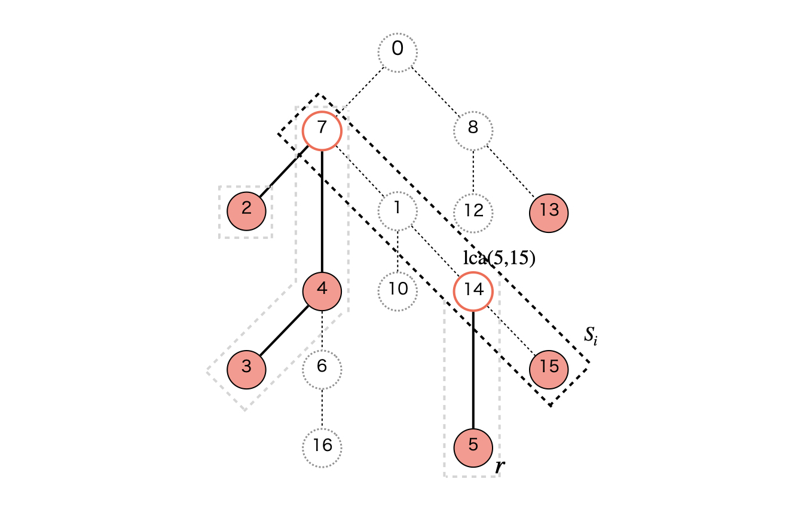
\(S_i = 13\) を調べると、\(15,14,7\) が \(\mathrm{frontline}\) から除外され、\(15,14\) と \(14,7\) の間に辺が構築されます。また最後に除外された \(7\) は \(\mathrm{LCA}(S_i,r) = 0\) ではないので、\(7\) と \(0\) の間に辺を構築します。
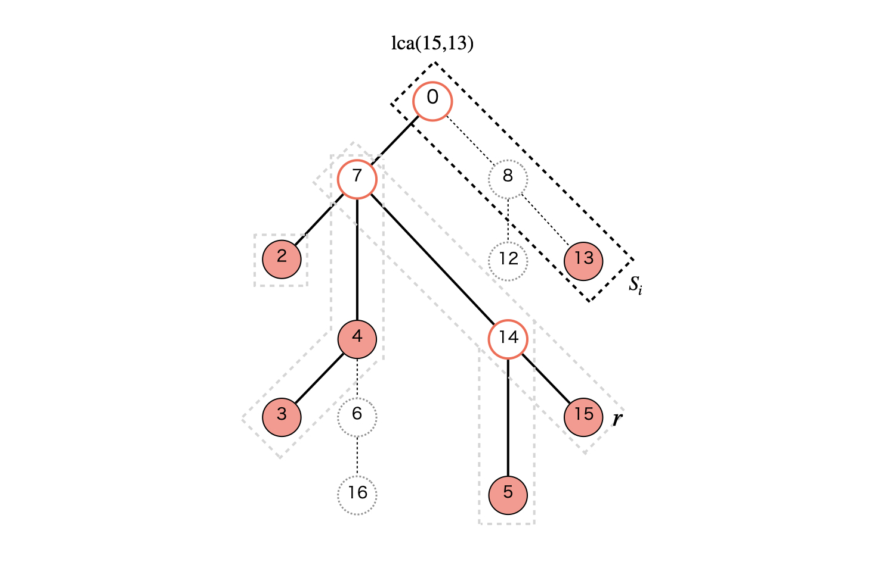
最後に、番兵として入れておいた \(S_0 = 2\) をもう一度調べます。このとき \(\mathrm{LCA}(S_i,r) = 0\) は Auxiliary Tree 全体の根です。よって、\(S_0\) を調べることで \(\mathrm{frontline}\) に残っている頂点/辺を全て確定して処理を完了させることができます。\(\mathrm{frontline}\) からは \(13,0\) を除外して \(13,0\) の間に辺を構築します。
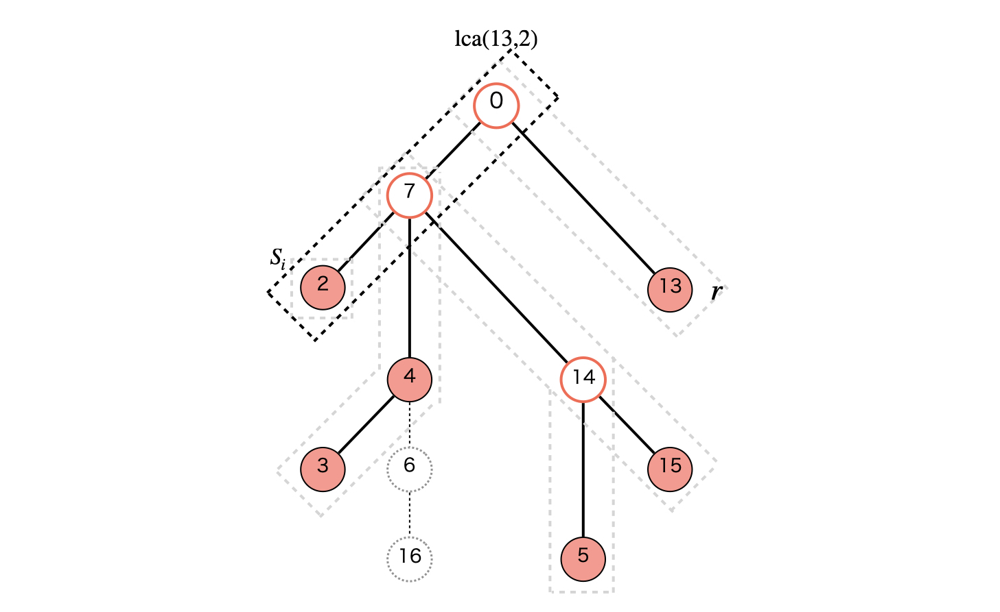
この時点で確定していない辺や頂点は全て除外して OK です。木圧縮ができました。
木の走査に \(O(|S|)\) 時間、その中での \(\mathrm{LCA}\) のクエリごとに \(O(\log{N})\) 時間かかり、DFS 到達順でのソートに \(O(|S|\log{|S|})\) 時間かかるので、合わせて \(O(|S|(\log{|S|} + \log{N}))\) 時間かかります。なお LCA は別の方法で前処理すると、でクエリあたり定数時間になります。